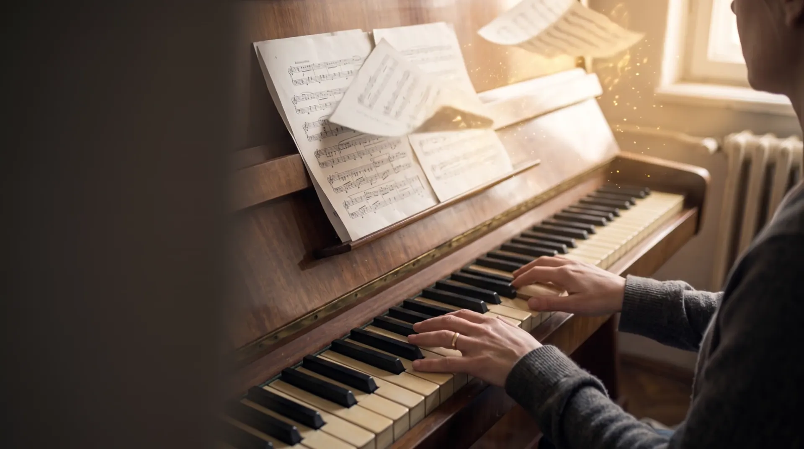
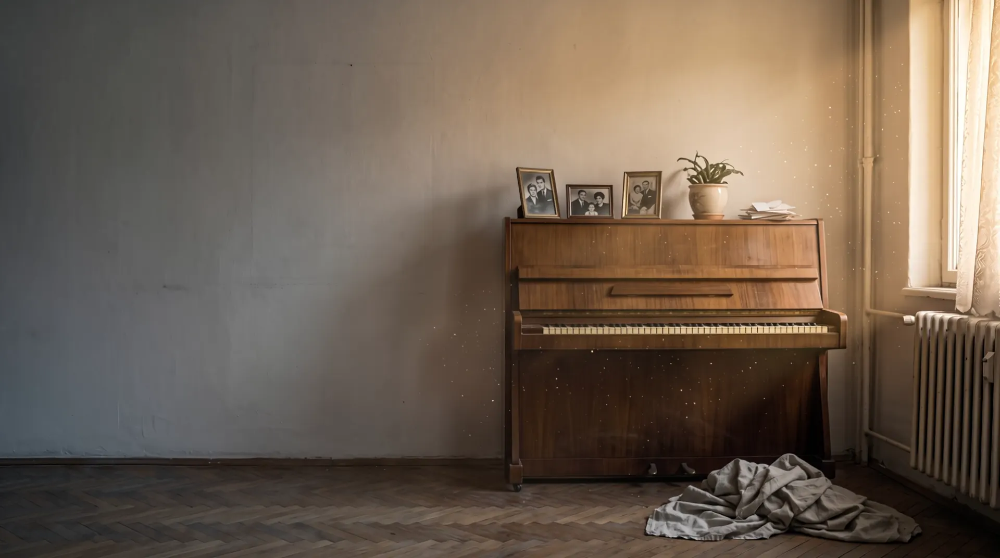
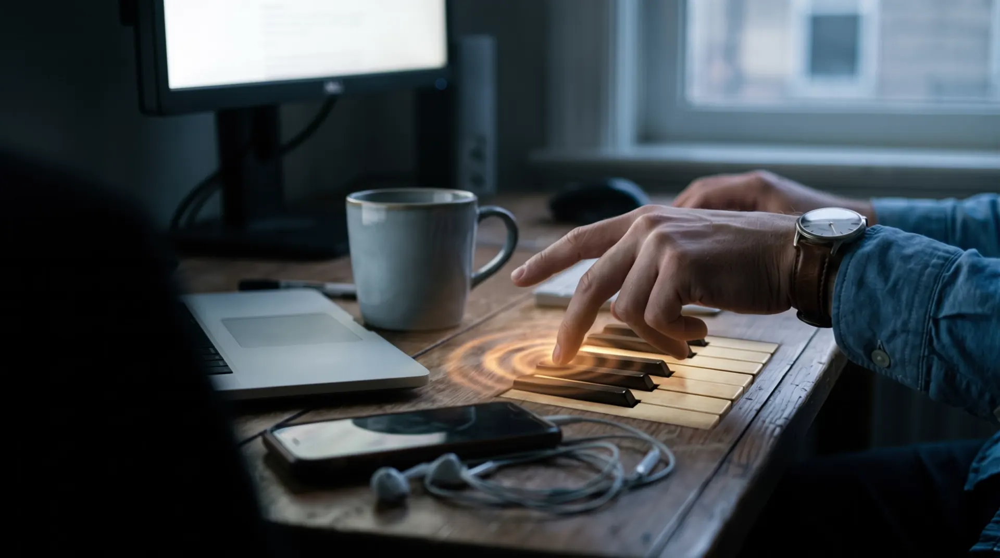

„Am renunțat în copilărie.”
Exerciții plictisitoare și note pe care nu le înțelegeai. Nu pianul a fost problema, ci felul în care ți l-au arătat.
Te regăsești?
Exerciții plictisitoare și note pe care nu le înțelegeai. Nu pianul a fost problema, ci felul în care ți l-au arătat.
Programul tău e plin și e firesc. Aici contează cele câteva minute pe care le ai, nu orele pe care nu le ai.
La 30, 40 sau 50 de ani ai un avantaj: știi exact ce melodii îți plac. Un adult începe de la ele, nu de la scale.

Metoda „Armonie fără Partituri”
Pornești de la o melodie pe care o știi deja pe dinăuntru. Urechea ta face jumătate din treabă.
Înveți cele trei repere ale oricărei melodii: acasă, plecare și tensiune. Le recunoști cu urechea, nu din hârtie.
Pui acordurile sub melodie și, la un moment dat, observi că tu cânți. Fără note pe pupitru.
Chiar aici
Clapele roz sunt Do, Mi și Sol. Apasă-le pe rând, apoi împreună: sună a muzică. Acesta e un acord.Ai apăsat trei clape și sună a muzică: acesta e un acord.
Poți folosi și tastatura: rândul A S D F G H J K L ; ' Enter pentru clapele albe, W E T Y U O P [ ] \ pentru cele negre.
Sesiunea gratuită
Profesoara ta
Andreea îi ajută pe adulți să cânte la pian după ureche, fără partituri, pornind de la melodiile pe care le iubesc.
„Pentru asta am venit aici! Acum cânt după ureche.”
Nu. Metoda pornește de la ureche, nu de la partitură.
Online, în sesiuni live. După fiecare sesiune primești un scurt recap cu ce ai de exersat.
[RĂSPUNSUL ANDREEI: PIAN, PIAN DIGITAL SAU CLAPĂ?]
[PREȚ SAU „AFLI ÎN SESIUNE”]

Atât de simplu începe. Clapele chiar cântă: apasă una, apoi încă două.Atât de simplu începe.
Poți folosi și tastatura: rândul A S D F G H J K L ; ' Enter pentru clapele albe, W E T Y U O P [ ] \ pentru cele negre.
Te regăsești?
Exerciții plictisitoare și note pe care nu le înțelegeai. Nu pianul a fost problema, ci felul în care ți l-au arătat.
Programul tău e plin și e firesc. Aici contează cele câteva minute pe care le ai, nu orele pe care nu le ai.
La 30, 40 sau 50 de ani ai un avantaj: știi exact ce melodii îți plac. Un adult începe de la ele, nu de la scale.
Metoda „Armonie fără Partituri”
Pornești de la o melodie pe care o știi deja pe dinăuntru. Urechea ta face jumătate din treabă.
Înveți cele trei repere ale oricărei melodii. Le recunoști cu urechea, nu din hârtie. Ascultă-le:
Pui acordurile sub melodie și, la un moment dat, observi că tu cânți. Fără note pe pupitru.
Sesiunea gratuită
Profesoara ta
Andreea îi ajută pe adulți să cânte la pian după ureche, fără partituri, pornind de la melodiile pe care le iubesc.
„Pentru asta am venit aici! Acum cânt după ureche.”
Nu. Metoda pornește de la ureche, nu de la partitură.
Online, în sesiuni live. După fiecare sesiune primești un scurt recap cu ce ai de exersat.
[RĂSPUNSUL ANDREEI: PIAN, PIAN DIGITAL SAU CLAPĂ?]
[PREȚ SAU „AFLI ÎN SESIUNE”]
